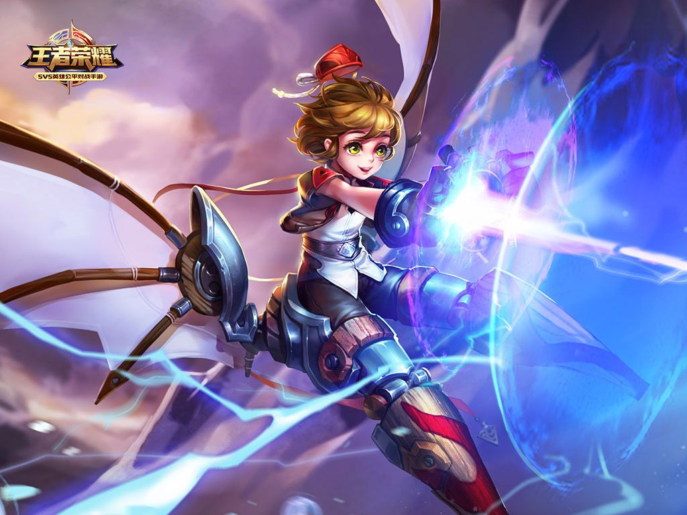
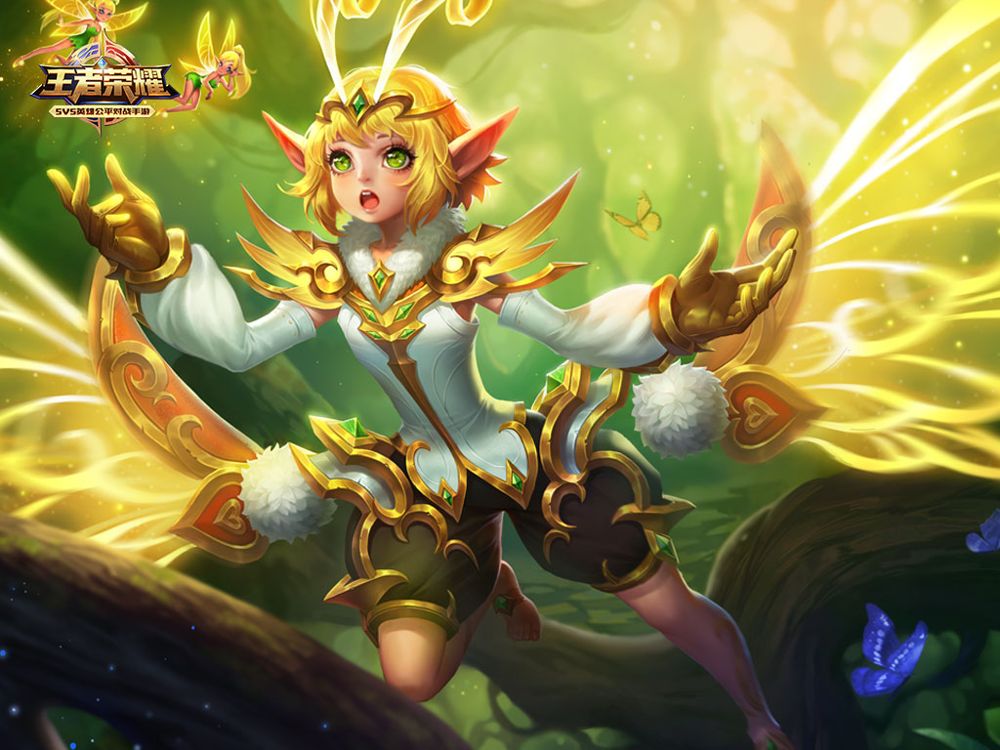
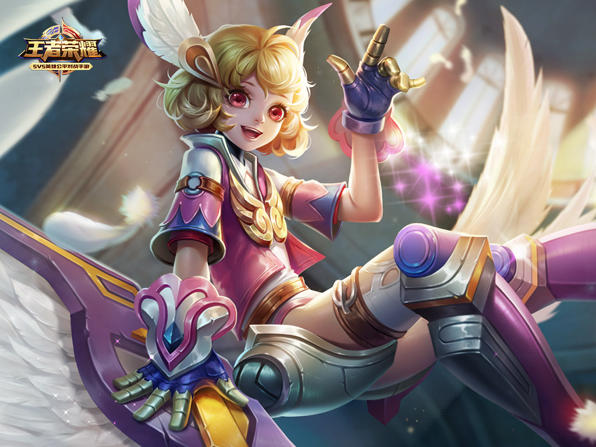
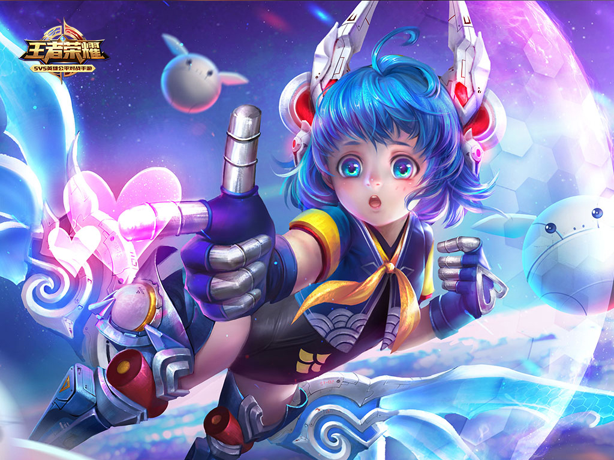

稷下三贤者培养了许多极具天分的弟子，孙膑是其中佼佼者之一。这个害羞的少年将兵法与机关术天才的结合在一起。面对各国王室争相聘请的巨大荣耀，他依然保持了谦逊和好学，赢得了人们的称赞。
但这份才华最终带来的是灾难。孙膑的成果令师兄庞涓感到威胁，产生了激烈的竞争之心，甚至当众蔑称他为“小姑娘”和“爱哭鬼”。即使被诋毁，孙膑仍以对师兄的礼节友善相待，这令周围的人们为之不平，尤其是好友田忌，多次训斥庞涓狭窄的心胸。
庞涓在学院陷入孤立。他已分不清自己是嫉妒孙膑的才华，抑或恼怒于孙膑和田忌之间的友情。不久，孙膑前往稷下附近调查遗迹的途中遭遇狂暴的魔种。被追赶时摔下山崖，埋入一片废墟中。田忌发现好友失踪后，焦急的四处寻找。借助机关微弱征兆的引导，他冒险闯入废墟，试图解救双腿重伤的孙膑。不幸的是，古老的机关被触动，引发了小小的时空波动。于是就在孙膑的眼前，田忌的身躯痛苦的被撕裂开，卷入黑暗的漩涡中。
造成事故的巧合并非偶然。庞涓精心策划的完美报复实现了。但上天并不忍心葬送才华横溢的孙膑。他被闻讯而来的大宗师墨子救出，保住了生命，代价则是双腿和好友田忌。
庞涓以为孙膑即使继续活下去，也将一蹶不振。但将自己关在家中六个月后，孙膑以机关翼代替双腿，重新出现在人们眼前。这一次亮相连三贤者都惊动了。曾经比谁都脆弱，一点小事都哭个没完的少年，坚定宣布他没空悲伤，有更加紧迫的事必须完成。
那个黑暗中的恐怖时刻，虽然亲眼目睹好友被拉入时间漩涡，但没有鲜血，没有残骸，什么都没有。田忌，一定还在某个地方活着。孙膑如此坚信。他要将太古遗迹的秘密找出来。就像噩梦的夜晚，田忌焦急呼唤着他名字一样，现在轮到他以机关术的力量，重新打开无边无垠的时空之门，将最好的朋友带回家。
“时间和波浪，变化无常。”
返回顶部 返回首页